Last updated: 2020-11-25
Checks: 7 0
Knit directory: SCHEDULE_RT/
This reproducible R Markdown analysis was created with workflowr (version 1.6.1). The Checks tab describes the reproducibility checks that were applied when the results were created. The Past versions tab lists the development history.
Great! Since the R Markdown file has been committed to the Git repository, you know the exact version of the code that produced these results.
Great job! The global environment was empty. Objects defined in the global environment can affect the analysis in your R Markdown file in unknown ways. For reproduciblity it’s best to always run the code in an empty environment.
The command set.seed(20200416) was run prior to running the code in the R Markdown file. Setting a seed ensures that any results that rely on randomness, e.g. subsampling or permutations, are reproducible.
Great job! Recording the operating system, R version, and package versions is critical for reproducibility.
Nice! There were no cached chunks for this analysis, so you can be confident that you successfully produced the results during this run.
Great job! Using relative paths to the files within your workflowr project makes it easier to run your code on other machines.
Great! You are using Git for version control. Tracking code development and connecting the code version to the results is critical for reproducibility.
The results in this page were generated with repository version 0f44724. See the Past versions tab to see a history of the changes made to the R Markdown and HTML files.
Note that you need to be careful to ensure that all relevant files for the analysis have been committed to Git prior to generating the results (you can use wflow_publish or wflow_git_commit). workflowr only checks the R Markdown file, but you know if there are other scripts or data files that it depends on. Below is the status of the Git repository when the results were generated:
Ignored files:
Ignored: .Rhistory
Ignored: .Rproj.user/
Ignored: analysis/patch_selection.png
Untracked files:
Untracked: analysis/Notes.txt
Untracked: analysis/prereg.pdf
Untracked: analysis/prereg.tex
Untracked: analysis/reward rate analysis.docx
Untracked: analysis/rewardRate.jpg
Untracked: data/Archive/
Unstaged changes:
Deleted: data/200428_fixed_rdk_data.csv
Deleted: data/200429_fixed_rdk_data.csv
Deleted: data/200503_fixed_rdk_data.csv
Deleted: data/200508 2020-schedule-rdk.csv
Deleted: data/200511_fixed_rdk_data.csv
Deleted: data/200515_random_rdk_data.csv
Deleted: data/200521_random_rdk_data.csv
Deleted: data/200522_random_rdk_data.csv
Deleted: data/200525_random_rdk_data.csv
Deleted: data/200606_random_rdk_data.csv
Deleted: data/test_data.csv
Deleted: data/test_data_multipleSubjects.csv
Note that any generated files, e.g. HTML, png, CSS, etc., are not included in this status report because it is ok for generated content to have uncommitted changes.
These are the previous versions of the repository in which changes were made to the R Markdown (analysis/exp2_errordelay.Rmd) and HTML (docs/exp2_errordelay.html) files. If you’ve configured a remote Git repository (see ?wflow_git_remote), click on the hyperlinks in the table below to view the files as they were in that past version.
| File | Version | Author | Date | Message |
|---|---|---|---|---|
| Rmd | 0f44724 | knowlabUnimelb | 2020-11-25 | Add analysis of Experiment 2 |
Daniel R. Little1, Ami Eidels2, and Deborah J. Lin1
1 The University of Melbourne, 2 The University of Newcastle
In Experiment 1, where there was no time penalty applied for making an incorrect RDK judgment, it was possible for subjects to adopt a “fast guess” strategy, particularly when responding to the hardest RDK’s. Although our analysis of RT and reward rate suggested that this was not the case, we sought to further mitigate against this strategy by imposing a 500 msec time penalty after an error response. Experiment 2 thus acts as a conceptual replication of Experiment 1 but with an additional error penalty.
We tested 100 participants (83 F, 12 M, 5 Undeclared). Participants were recruited through the Melbourne School of Psychological Sciences Research Experience Pool (Mean age = 19.32, range = 17 - 40) and were reimbursed with credit toward completion of a first year psychology subject. Datasets from 4 subjects were excluded for completing the experiment twice; i.e., only the first of the datasets for these subjects was retained.
Fifty were assigned to the Fixed Difficulty condition. In this condition, the location of easy, medium, hard, and very hard random dot kinematograms (RDK’s) was held constant across trials.
Fifty were assigned to the Random Difficulty condition. In this condition, the location of easy, medium, hard, and very hard random dot kinematograms (RDK’s) were randomized from trial to trial.
The Fixed Difficulty experiment was completed before the Random Difficulty experiment. Participants only completed one of these.
The design of the experiment was identical to Experiment 1, with the sole exception being that after making an error on an RDK direction judgment, a blank interval was presented for 500 msec before the RDK was resampled, and the RDK trial began again.
Data Cleaning
3 subjects had less than chance accuracy on the easiest RDK; we removed these participants from further anlaysis leaving 47 and 50 in the fixed and random location conditions, respectively.
Across both conditions, participants completed 3.73 tasks during the no_deadline phase and 3.29 tasks during the deadline phase.
| Condition | Phase | M |
|---|---|---|
| fixed | no_deadline | 3.73 |
| fixed | deadline | 3.47 |
| random | no_deadline | 3.74 |
| random | deadline | 3.11 |
There were fewer tasks completed under a deadline than without a deadline (\(\beta_{deadline}\) = 0.26, SE = 0.06).1 There was no difference between conditions, (\(\beta_{condition}\) = 0.01, SE = 0.06). As shown in the table, there was an interaction between deadline and location condition (\(\beta_{condition \times deadline}\)= 0.37, SE = 0.09), with deadline affecting the number of completed tasks in the random condition more than in the fixed condition. 2
RTs became shorter and more accurate as the difficulty of the RDK became easier. As expected, the RTs were shorter under a deadline than without a deadline. For the first plot, showing the average of each attempt on each RDK, we first removed trials with RTs greater than 3000 msec (N = 5).
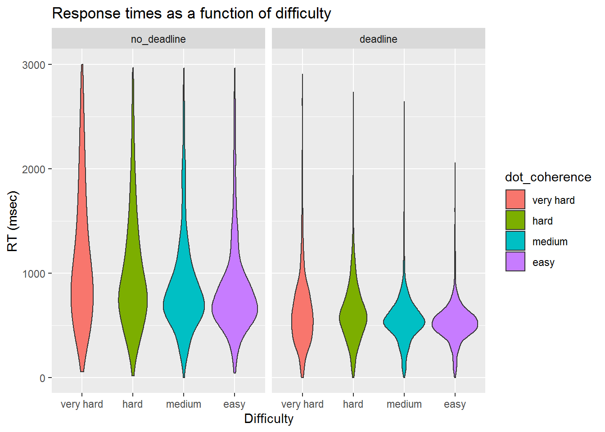
For the second plot, showing the time to complete an RDK as the cumulative sum across multiple attempts within a trial. We removed trials with RTs greater than 6000 msec. This plot reflects the total time to complete the RDK correctly, including any error penalties.
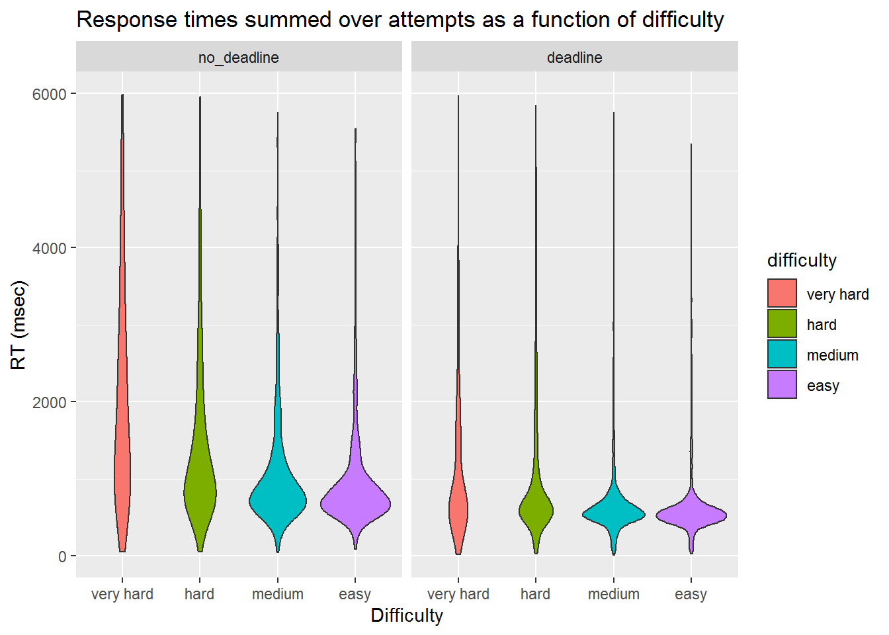
We further broke down RTs by condition, deadline, and difficulty.
| condition | phase | difficulty | n | Mean.Correct | SE.Correct | Mean.RT | SE.RT | Mean.SumRT | SE.SumRT |
|---|---|---|---|---|---|---|---|---|---|
| fixed | no_deadline | Very Hard | 694 | 0.58 | 0.02 | 1191.21 | 24.95 | 1960.52 | 52.04 |
| fixed | no_deadline | Hard | 541 | 0.80 | 0.02 | 1053.30 | 24.15 | 1380.77 | 42.00 |
| fixed | no_deadline | Medium | 526 | 0.84 | 0.02 | 892.99 | 21.23 | 1107.19 | 36.47 |
| fixed | no_deadline | Easy | 495 | 0.90 | 0.01 | 888.10 | 20.73 | 985.38 | 31.23 |
| fixed | deadline | Very Hard | 1468 | 0.61 | 0.01 | 621.69 | 7.89 | 1022.98 | 22.05 |
| fixed | deadline | Hard | 1618 | 0.77 | 0.01 | 647.00 | 7.16 | 920.70 | 18.97 |
| fixed | deadline | Medium | 1480 | 0.91 | 0.01 | 557.05 | 5.30 | 656.27 | 11.78 |
| fixed | deadline | Easy | 1494 | 0.93 | 0.01 | 527.59 | 4.25 | 609.26 | 9.89 |
| random | no_deadline | Very Hard | 826 | 0.52 | 0.02 | 1109.83 | 22.02 | 2084.96 | 48.06 |
| random | no_deadline | Hard | 645 | 0.71 | 0.02 | 958.85 | 21.21 | 1454.96 | 43.15 |
| random | no_deadline | Medium | 557 | 0.86 | 0.01 | 882.81 | 20.41 | 1058.45 | 32.69 |
| random | no_deadline | Easy | 535 | 0.88 | 0.01 | 811.92 | 19.64 | 957.57 | 30.42 |
| random | deadline | Very Hard | 1792 | 0.54 | 0.01 | 633.72 | 8.53 | 1279.38 | 26.97 |
| random | deadline | Hard | 1618 | 0.70 | 0.01 | 598.63 | 7.03 | 966.31 | 21.18 |
| random | deadline | Medium | 1435 | 0.84 | 0.01 | 541.99 | 5.64 | 704.88 | 14.05 |
| random | deadline | Easy | 1467 | 0.87 | 0.01 | 520.86 | 5.25 | 657.68 | 12.54 |
Statistical analysis, using a 2 condition \(\times\) 2 phase \(\times\) 4 difficulty between-within ANOVA, of the effect of these factors on accuracy confirmed the effect of difficulty, F(3, 285) = 275.3, p = 0, \(\eta^2\) = 0.46. RDK responses in the fixed condition were more accurate than RDK responses in the random condition, F(1, 95) = 8.23, p = 0, \(\eta^2\) = 0.03. RDK responses were not more accurate under a deadline then under no deadline, F(1, 95) = 0.55, p = 0.46, \(\eta^2\) = 0. Finally, unlike Experiment 1, there was no phase \(\times\) difficulty interaction, F(3, 285) = 1.86, p = 0.14, \(\eta^2\) = 0 reflecting a greater increase from easy to very hard when there was no deadline compared to when there was a deadline.
RTs were shorter under a deadline, F(1, 95) = 334.83, p = 0, \(\eta^2\) = 0.43, and that RTs became shorter as the RDK’s became easier, F(3, 285) = 64.15, p = 0, \(\eta^2\) = 0.11. There was again an interaction between phase and difficulty, F(3, 285) = 29.01, p = 0, \(\eta^2\) = 0.03 indicating that RT decreased more with increasing dot coherence when there was no deadline compared to when there was a deadline. The pattern of these results replicated Experiment 1.
In analysing sumRT, we confirmed that sumRTs were shorter under a deadline, F(1, 95) = 274.59, p = 0, \(\eta^2\) = 0.36, and that RTs became shorter as the RDK’s became easier, F(3, 285) = 244.42, p = 0, \(\eta^2\) = 0.43. There was again an interaction between phase and difficulty, F(3, 285) = 41.34, p = 0, \(\eta^2\) = 0.09 indicating that RT decreased more with increasing dot coherence when there was no deadline compared to when there was a deadline.
We again computed the reward rate to test whether our ordering of Easy to Very Hard reflected an optimal order. For Experiment 2, the computation of reward rate now includes the 500 msec penalty after each incorrect RDK response.
Inspection of the figure reveals that RR is roughly monotonically increasing when tasks become easier in all conditions. Again, under such conditions, the optimal order of task-completion should be easy-to-hardest.
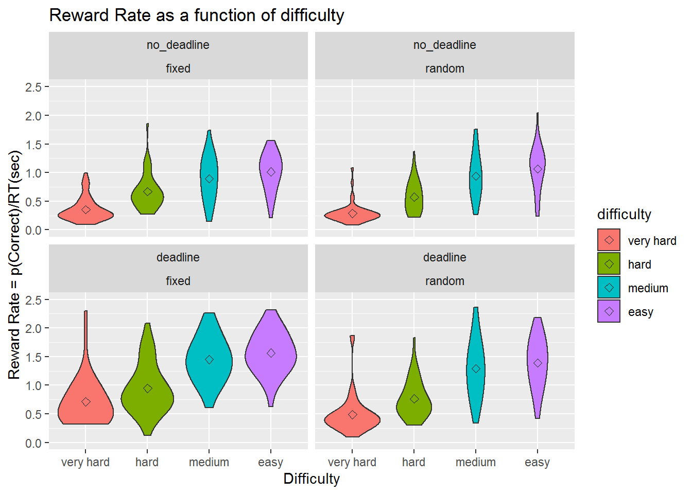
As in Experiment 1, we have established that the RDK’s are ordered in accuracy, difficulty, and reward rate. The analysis of optimality also replicated the results for Experiment 1.
The ordering of choices is more optimal when the locations are fixed and subtask order becomes more optimal under a deadline. By contrast, when locations are random, responding becomes less optimal under a deadline. Again, this likely reflects the additional costs of having to search for the appropriate task to complete.
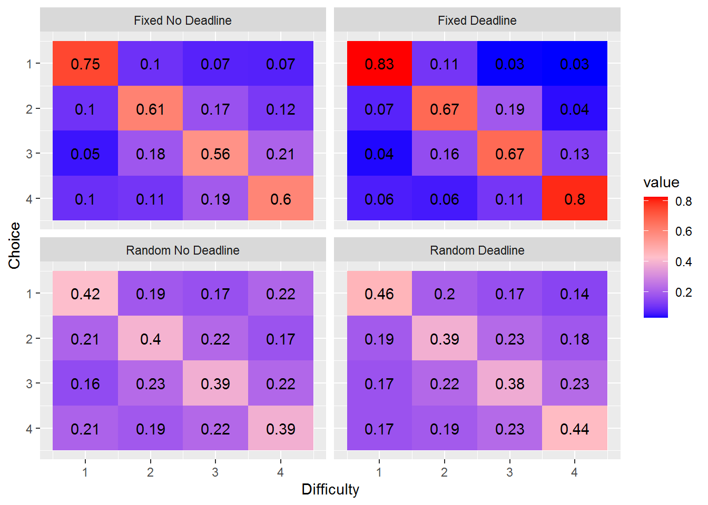
| phase | condition | easy.first | easy.med | easy.med.hard |
|---|---|---|---|---|
| untimed | fixed | 0.75 | 0.55 | 0.43 |
| deadline | fixed | 0.82 | 0.66 | 0.57 |
| untimed | random | 0.42 | 0.27 | 0.20 |
| deadline | random | 0.46 | 0.27 | 0.20 |
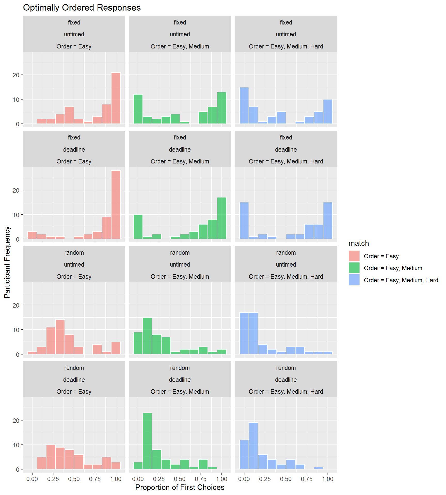
The following figures compare max_distance, min_distance, and avg_distance between the fixed difficulty and random difficulty conditions as a function of deadline condition and phase. For each of these measures, lower values reflect respones which are closer to optimal.
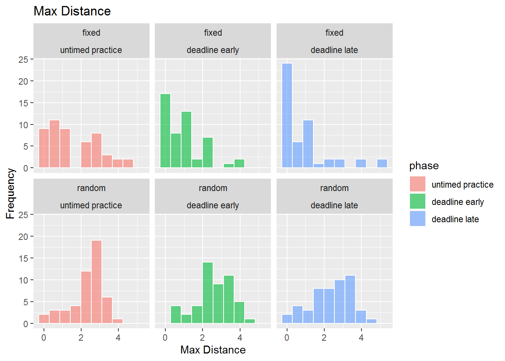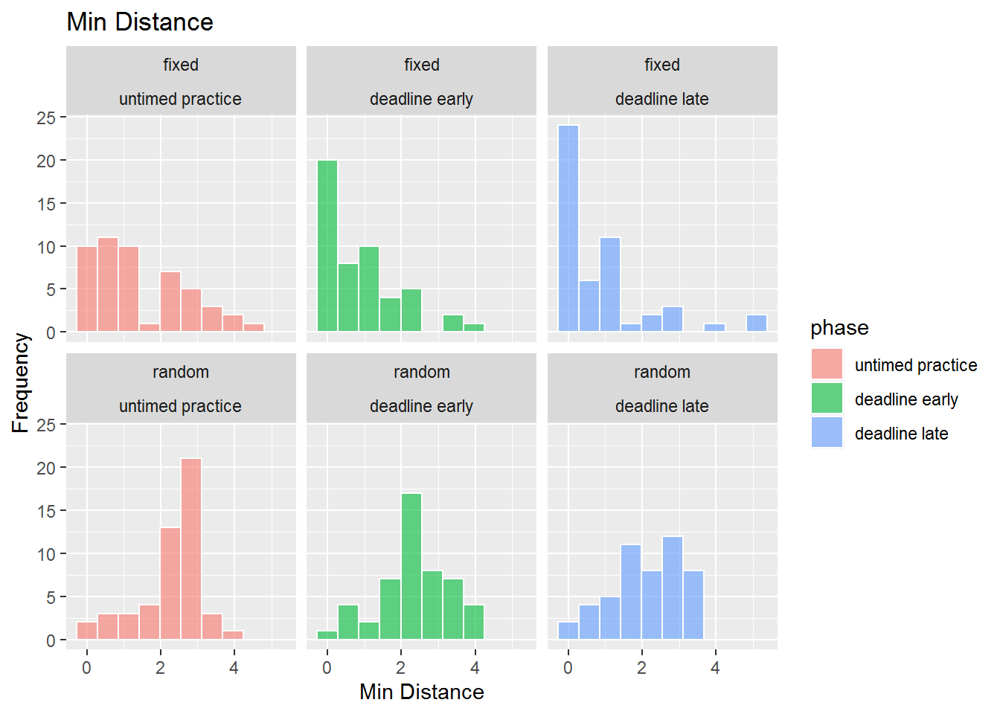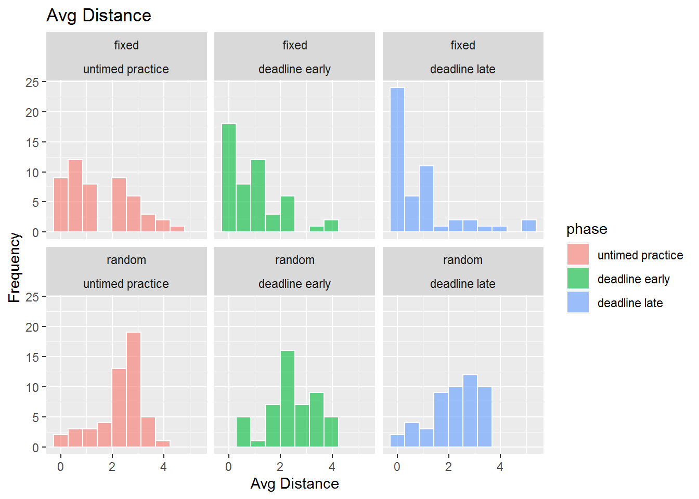
In order to characterise performance, we again computed the ks-test statistic between the data (the average partial distance data) and the random order distribution and the first-two optimal distribution. Recall that values less than one indicate that the data are more consistent with random than optimal responding. Values greater than one indicate that the data are more consistent with optimal rather than random responding.
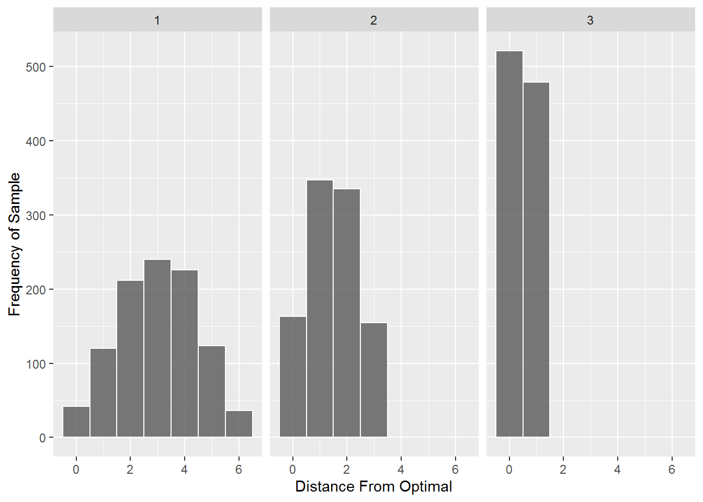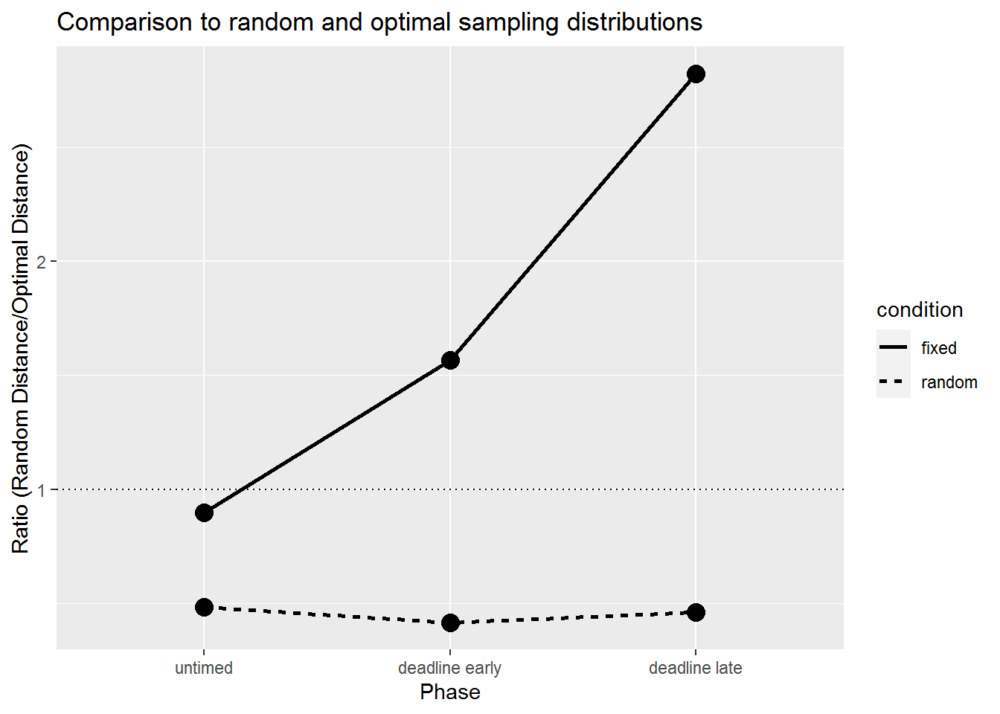
As in Experiment 1, responding is more optimal in the fixed deadline condition particularly during the last ten trials; in the random deadline conditions, responding was closer to a random sampling distribution than to an optimal sampling distribution.
Also as like Experiment 1, there was little evidence of a spatial response strategy.
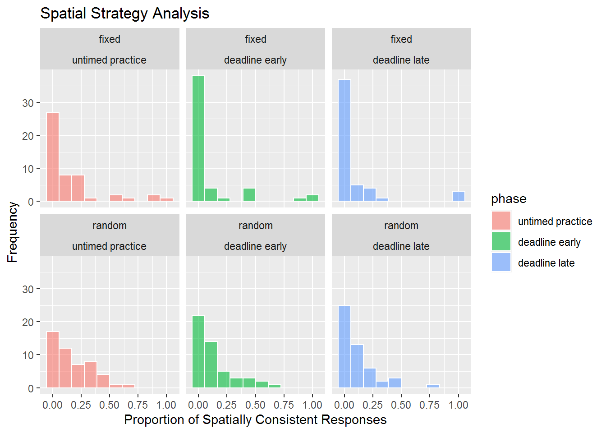
sessionInfo()R version 3.6.3 (2020-02-29)
Platform: x86_64-w64-mingw32/x64 (64-bit)
Running under: Windows 7 x64 (build 7601) Service Pack 1
Matrix products: default
locale:
[1] LC_COLLATE=English_Australia.1252 LC_CTYPE=English_Australia.1252
[3] LC_MONETARY=English_Australia.1252 LC_NUMERIC=C
[5] LC_TIME=English_Australia.1252
attached base packages:
[1] grid stats graphics grDevices utils datasets methods
[8] base
other attached packages:
[1] jpeg_0.1-8.1 rstatix_0.6.0 lme4_1.1-23 Matrix_1.2-18
[5] png_0.1-7 reshape2_1.4.3 knitr_1.28 hrbrthemes_0.8.0
[9] english_1.2-5 gtools_3.8.2 DescTools_0.99.34 forcats_0.5.0
[13] stringr_1.4.0 dplyr_0.8.5 purrr_0.3.3 readr_1.3.1
[17] tidyr_1.0.2 tibble_3.0.0 ggplot2_3.3.0 tidyverse_1.3.0
[21] workflowr_1.6.1
loaded via a namespace (and not attached):
[1] nlme_3.1-144 fs_1.4.1 lubridate_1.7.4 httr_1.4.1
[5] rprojroot_1.3-2 tools_3.6.3 backports_1.1.5 R6_2.4.1
[9] DBI_1.1.0 colorspace_1.4-1 withr_2.1.2 tidyselect_1.0.0
[13] curl_4.3 compiler_3.6.3 git2r_0.26.1 extrafontdb_1.0
[17] cli_2.0.2 rvest_0.3.5 expm_0.999-4 xml2_1.3.0
[21] labeling_0.3 scales_1.1.0 mvtnorm_1.1-0 systemfonts_0.2.2
[25] digest_0.6.25 foreign_0.8-75 minqa_1.2.4 rmarkdown_2.1
[29] rio_0.5.16 pkgconfig_2.0.3 htmltools_0.4.0 extrafont_0.17
[33] highr_0.8 dbplyr_1.4.2 rlang_0.4.5 readxl_1.3.1
[37] rstudioapi_0.11 farver_2.0.3 generics_0.0.2 jsonlite_1.6.1
[41] zip_2.0.4 car_3.0-8 magrittr_1.5 Rcpp_1.0.4
[45] munsell_0.5.0 fansi_0.4.1 abind_1.4-5 gdtools_0.2.2
[49] lifecycle_0.2.0 stringi_1.4.6 whisker_0.4 yaml_2.2.1
[53] carData_3.0-4 MASS_7.3-51.5 plyr_1.8.6 promises_1.1.0
[57] crayon_1.3.4 lattice_0.20-38 haven_2.2.0 splines_3.6.3
[61] hms_0.5.3 pillar_1.4.3 boot_1.3-24 reprex_0.3.0
[65] glue_1.4.0 evaluate_0.14 data.table_1.12.8 modelr_0.1.6
[69] nloptr_1.2.2.1 vctrs_0.2.4 httpuv_1.5.2 Rttf2pt1_1.3.8
[73] cellranger_1.1.0 gtable_0.3.0 assertthat_0.2.1 openxlsx_4.1.5
[77] xfun_0.12 broom_0.7.0 later_1.0.0 statmod_1.4.34
[81] ellipsis_0.3.0 Throughout, we infer significance by examining whether 2 \(\times\) SE includes 0.↩
We compared three models: (1) a standard linear regression model with location condition, deadline, and their interaction as factors (BIC = 8864.44) ; (2) a multilevel regression model with an additional random intercept for each subject (BIC = 8276.85); and (3) a multilevel regression with a random intercept and random deadline coefficient for each subject (BIC = 8154.45). The third model was preferred on a BIC basis; hence, we report the details of that model only.↩